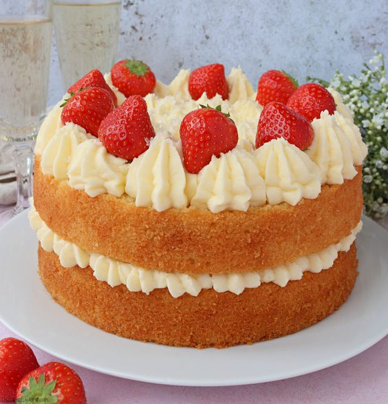

Ingredientes
- 1 caja de bizcochuelo (puede ser de cualquier marca)
- 1/2 kilo de frutillas
- 500 ml de crema de leche
- 150 g de azúcar impalpable
- Agua y azúcar común
Paso 1
- Primero necesitaremos preparar el bizcochuelo siguiendo las instrucciones de su caja.
- Una vez que el bizcochuelo esté listo, retirarlo del molde y reservarlo en un lugar fresco.
Paso 2
- Mezclamos 500g de crema con 150g de azúcar impalpable.
- Cuando la crema esté firme, reservamos en la heladera.
- Ahora ponemos en una cacerola una taza de agua y tres cucharadas soperas de azúcar. Lo dejamos en el fuego, sin revolver, hasta que el azúcar se haya disuelto.
- Dejar enfriar el almíbar.
Paso 3
- Cortar el bizcochuelo en las capas deseadas, puede ser dos o una, depende de la altura del bizcochuelo.
- Poner una capa de crema sobre el bizcochuelo y una capa de frutillas cortadas a la mitad sobre la crema. Luego, poner la otra mitad del bizcochuelo encima.
- ¡Ya tenemos la torta de frutillas! Ahora falta decorar. Puedes envolver la torta con lo que queda de crema y colocar algunas frutillas por encima. ¡Este último paso queda a la creatividad de cada uno!